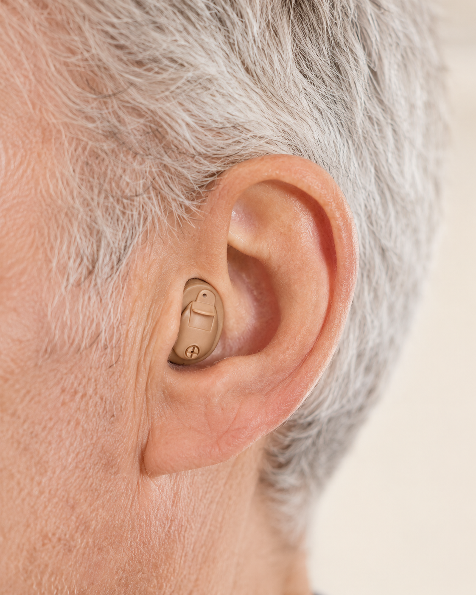
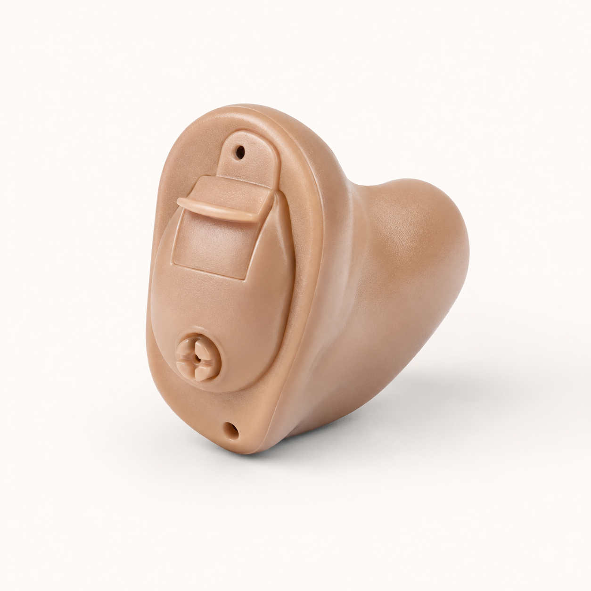
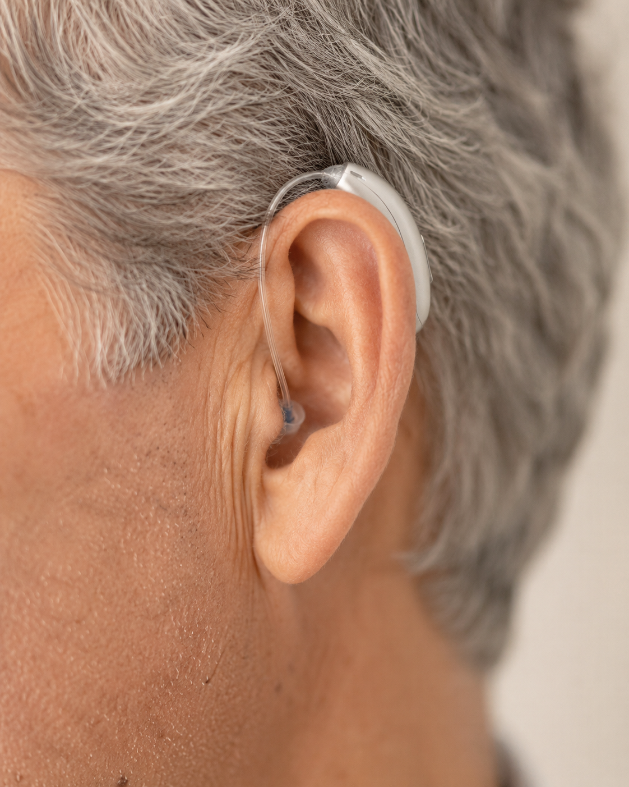
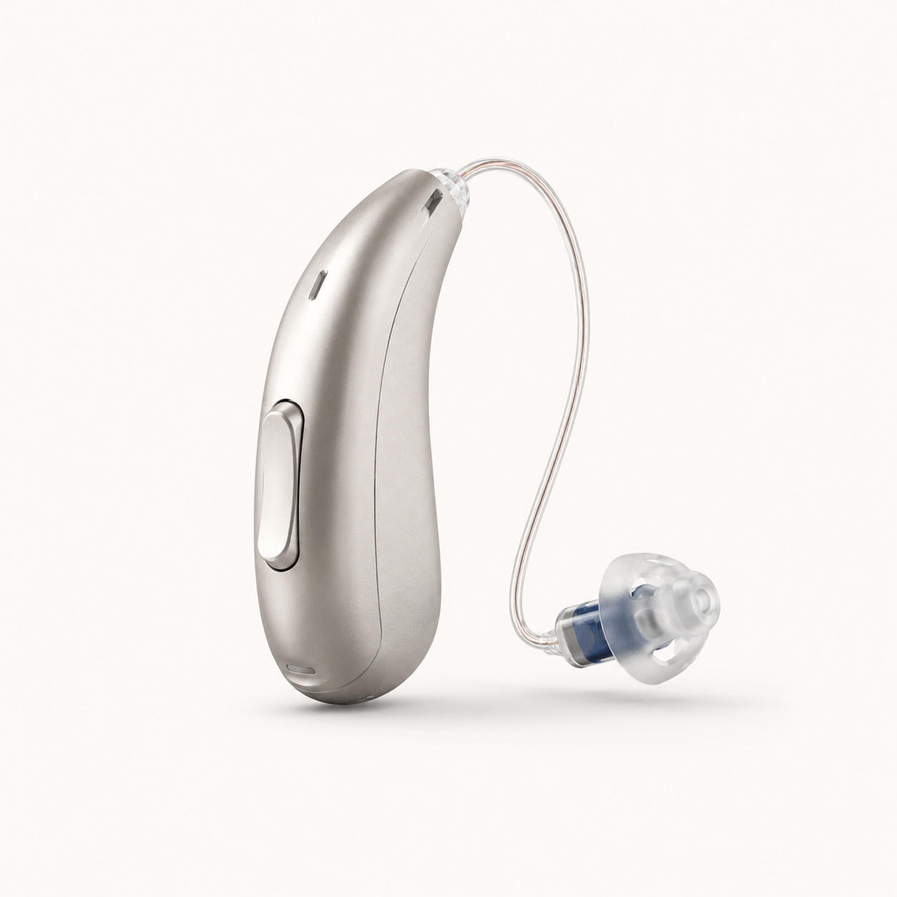
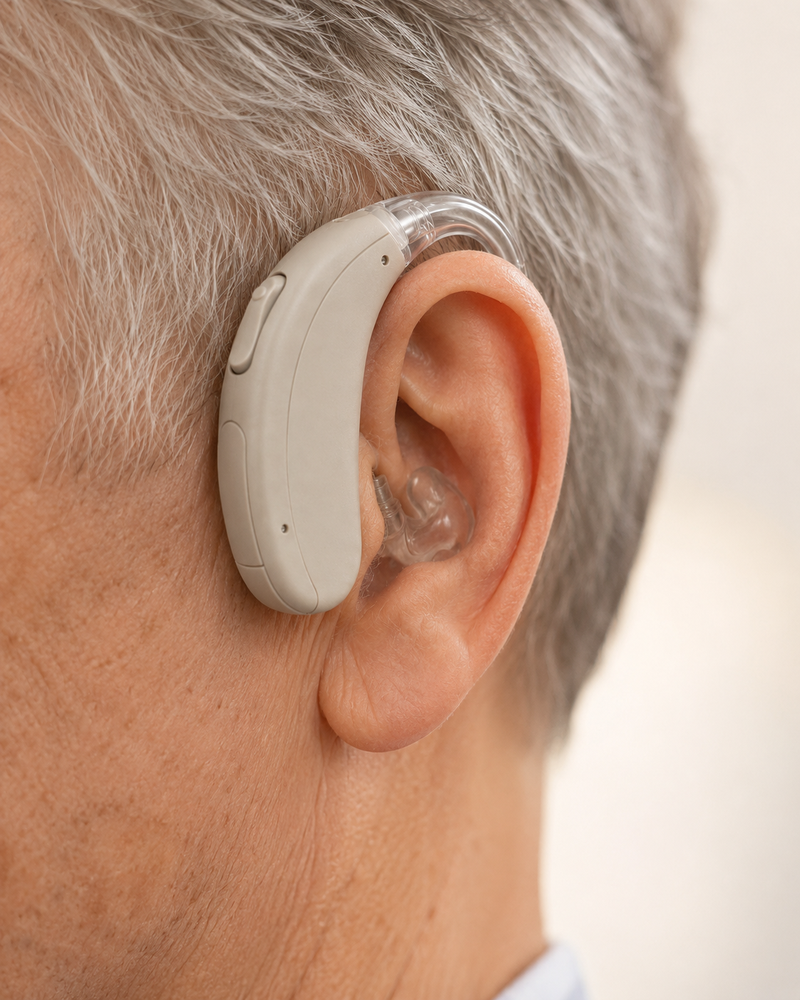
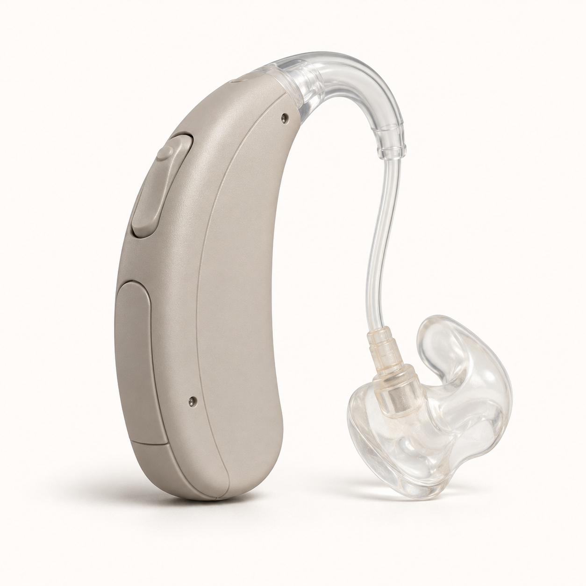

Niveau de perte
Mesuré en cabine, fréquence par fréquence. C'est le premier critère.
Au-delà des marques et des gammes, tous les appareils auditifs se rangent en trois grandes familles. Le bon choix dépend de votre audition, de votre anatomie et de votre quotidien — pas d'une mode ou d'un prix.


Tout l'appareil — micro, amplificateur, écouteur, pile — se loge dans le conduit auditif. Selon le modèle, il peut être quasiment invisible de l'extérieur.
Fabriqué sur mesure d'après l'empreinte de votre conduit. Quatre sous-formats existent (IIC, CIC, ITC, ITE) selon le degré de discrétion souhaité.


Le micro et l'amplificateur sont logés dans un petit boîtier placé derrière l'oreille. Un fil très fin et discret achemine le son jusqu'à un écouteur placé directement dans le conduit auditif.
C'est aujourd'hui le format le plus prescrit en Belgique : il combine discrétion, polyvalence et performances audio.


L'ensemble micro, amplificateur et écouteur est intégré dans un boîtier placé derrière l'oreille. Le son est acheminé via un tube et un embout sur mesure jusque dans le conduit.
Format historique de l'appareillage auditif, toujours irremplaçable pour les pertes importantes et les situations médicales particulières.
Seul un bilan auditif clinique permet d'objectiver le type d'appareil le mieux adapté. La forme n'est qu'une conséquence : votre audiogramme et votre quotidien guident la décision.
Mesuré en cabine, fréquence par fréquence. C'est le premier critère.
Largeur du conduit, état du tympan — certaines morphologies excluent l'intra.
Réunions, sport, téléphone, lunettes — le contexte d'usage compte.
Intervention INAMI et mutualité similaires sur les 3 formats. Le différentiel vient du niveau technologique.
Bilan auditif complet, essai 30 jours, et notre conseil indépendant pour valider le bon choix.